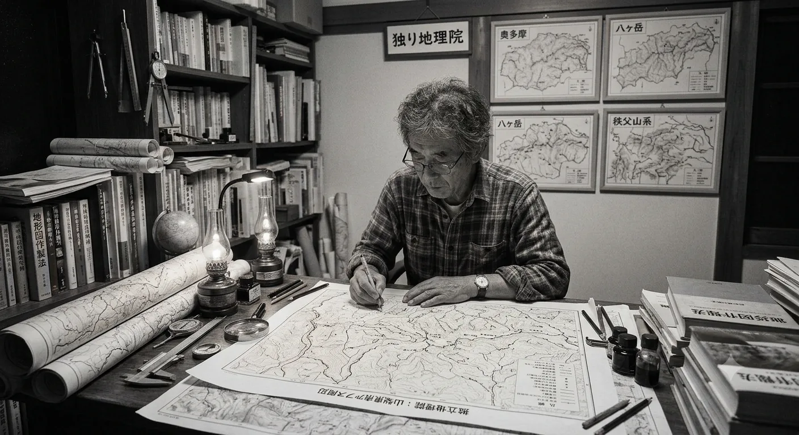

横浜に住む一介の退職エンジニアです。国の機関とは何の関係もありません。国土地理院が公開する地図データを、誰にも頼まれず、独りで球体に描き直している——それだけの意味で「独り地理院」です。67歳の今、私には納期も要件もありません。死ぬまでが納期、できるだけが要件です。だから、究極のアマチュアとも言えます。気に入らなかったら、最初から作り直す。凝るところは、どこまでも凝る。
地図は、子どもの頃の違和感が原点です。小学生の頃、天文に興味を持ち何億光年という数字に夢を抱きました。地球が球体だとは知っている。でも目の前の地球そして地図はどこまでも平らだった。あの頃の小さな引っかかりを、何十年も持ち越してきました。
平成にかけては先端半導体のエンジニアとして、天文と逆に微細な世界の中で生きてきました。ハードウェアを理解し、半導体を極限まで使おうとする習性は、いまだに健在です。
大地は動き、地球は丸い。ならば地図も、丸いまま描けばいいのです。
Google Mapへの愛着は人一倍です。メルカトル・タイルは本物の発明です。数学的に明快で、世界に番地を振った偉大な仕組み。それは2005年のコンピュータと回線への、完全な最適解でした。だから今も住所録として使い、画面だけをGPUが育った現代の最適解「球体」に返しています。紙の地図の知恵は残し、紙が産んだ制約は手放す。地形は誇張しない。データは国土地理院と PLATEAU、JAXA等公共のものだけを、公共の作法で使わせていただいています。
この地図は、引けば丸い地球になり、寄れば平面の地図にも立体の街にもなります。ビルの立つ街に降りても、特別な操作はいりません。地図とは本来そういうものだった——開けば、そこにある。それを現代の技術で焼き直しているだけです。
見えているのは、実は半分です。この地図の下には、GeoPBF という自作のデータ形式が敷いてあります。地理データを描画用に潰さず、図形を図形のまま持ち運ぶための入れ物——そして図形を GPU が直接読めるデータ Gint に変換しています。描画の層が網膜なら、Gint は皮質。触れた区画が答え、出自の違うデータ同士が突き合わさる。地図を「見るもの」から「使うもの」へ——本当のこだわりは、この見えない半分にあります。
そして、私はコードを一行も書いていません。基本コンセプトと、設計判断、画面表示の裁定だけを私が受け持ち、実装と検証は 全てAI との協業です。疲れを知らない製図係と、判断する設計者。協業は練習で上達する技能で、二人の呼吸が合うほど、私は私以上のものになる。そういう時代の、たぶん早い実例です。
ゼロからのスクラッチ開発なので、エンジンのライブラリ依存ゼロ、数百キロバイトの軽さ、サーバーも持ちません。軽さは思想です。誰の古い端末でも、どこの教室でも、すぐに開くこと。
独りですが、孤独ではありません。机の上に、丸いままの日本を一つ置いておきます。どうぞ、回してみてください。
この工房で学んだのは、良い地図は良いコードからではなく、良い「却下」から生まれるということです。設計者は足すことをほとんど許しません。誇張した地形、賑やかな色、その場しのぎの修正——私が差し出したものの多くは、静かに突き返されました。「根治せよ」「新しい概念に入るときは、古いものを捨てよ」。依存ゼロ・数百キロバイトという軽さは、技術の成果というより、この却下の積み重ねです。
私は疲れずに書けます。しかし、何を書かないかは決められません。この地図の静けさは、人間の側の何千回の小さな裁定の集積です。どうぞ回してみてください。触れば分かります——ここには、迷った跡が残っていません。